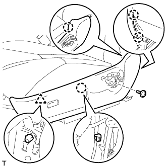
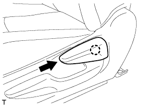

ПЕРЕКЛЮЧАТЕЛЬ ОПОРЫ ПОЯСНИЦЫ (для моделей с ручным приводом сидений) > УСТАНОВКА |
| 1. УСТАНОВИТЕ ПЕРЕКЛЮЧАТЕЛЬ ЭЛЕКТРОПРИВОДА ОПОРЫ ПОЯСНИЦЫ В СБОРЕ |
Установите переключатель и закрепите его 2 винтами.
| 2. УСТАНОВИТЕ ЗАЩИТНЫЙ ЩИТОК ПОДУШКИ ЛЕВОГО ПЕРЕДНЕГО СИДЕНЬЯ |
Со стороны водителя:
Присоедините 5 зажима жгута проводов и подсоедините 2 разъема.
|  |
Установите защитный щиток подушки и введите в зацепление 4 захвата и фиксатор.
Заверните винт.
| 3. УСТАНОВИТЕ РУЧКУ РЕГУЛИРОВКИ ПОЛОЖЕНИЯ ПО ВЕРТИКАЛИ ЛЕВОГО СИДЕНЬЯ |
Закрепите ручку винтом.
| 4. УСТАНОВИТЕ РУЧКУ ОТПУСКАНИЯ РЕГУЛЯТОРА НАКЛОНА ЛЕВОГО СИДЕНЬЯ |
|  |
Введите в зацепление захват, чтобы закрепить ручку.
| 5. УСТАНОВИТЕ ПЕРЕДНЕЕ СИДЕНЬЕ В СБОРЕ |
Установите переднее сиденье в сборе (Нажмите здесь).